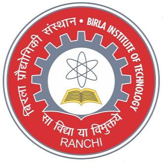

Work Experience
ZS
Decision Analyst Associate
- Designed an Artificial Neural Network (ANN) model with a custom loss function using 3 different metrics to overcome the limitation of having no ground truth for the predictions.
- Spearheaded a team in the development of an auto-encoder model for customer segmentation; incorporated the model in a SageMaker pipeline to extract and process data from Athena and run real time training and inference on the data to classify ~ 500,000 customers
- Implemented Non-Negative Matrix Factorization algorithm to predict channel affinity scores on a dataset of 100K health care providers, facilitating targeted customer acquisition
- Analyzed sales and advertising trends through Python and Excel for 5 leading cancer drugs, ensuring data accessibility for clients; resulting in 4 different marketing strategies across 3 geographies
- Recognized with the Pinnacle Performer Award for pioneering innovative, data-driven solutions to multiple clients across regions, propelling measurable business outcomes and enhancing client satisfaction
Research Experience

Birla Institute of Technology, Mesra
Research Assistant
- Collaborated with Dr. Gaurishanker Gupta to devise a novel methodology for the detection of crop diseases, focusing on the application of lightweight deep learning models for real-time agricultural use
- Conceptualized and implemented a transformer-based architecture with customized feature extraction techniques to classify crop diseases using the PlantVillage dataset with 30+ classes
- Optimized the model for deployment on low-power embedded devices by converting it to TensorFlow Lite (TFLite), reducing model’s storage size by 60% while maintaining high classification accuracy of ~98%
Indian Institute of Technology, Indore
Research Intern
- Worked under the guidance of Dr. Puneet Gupta on advanced image segmentation tasks involving Kvasir and CVC-Clinic DB medical image datasets, focusing on improving diagnostic accuracy for medical imaging
- Conducted comprehensive research on state-of-the-art image segmentation models, evaluating their applications in medical diagnosis and anomaly detection, particularly for gastrointestinal imaging
- Developed a hybrid deep learning model that integrated transformer architectures with convolutional neural networks (CNNs) to achieve semantic segmentation of medical images, enhancing both feature extraction and localization capabilities
Birla Institute of Technology, Mesra
Research Intern
- Assisted Dr. Raju Poddar in developing a novel approach for the classification of retinal diseases, utilizing advanced transformer-based deep learning models
- Proposed and developed a hybrid ViT+SVM (Support Vector Machine) model, achieving a classification accuracy of ~94%, demonstrating significant potential for medical image classification in clinical settings